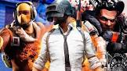

El origen de este genero de video juegos surgio de una pelicula japonesa, donde alumnos se ven obligados a luchar hasta la muerte hasta que uno sobreviva. El genero comenzo como multijugador de sobrevivencia de mundo abierto. Pero debido a su popularidad paso a ser un genero jugado en todo tipos de plataformas en pc,consolas y mobile.
A pesar de su poco tiempo de haber salido tenia mucha popularidad en la comunidad gamer,despues de el primer juego h1z1 empezaron a salir muchos juegos de este estilo.Juegos como: Fortnite, Apex legends, CSGO, Pubg y Rules for survival.
 Juegos batalla royal mas destacados:Este estilo de juego trae mucho atencion de bastantes fans debido a sus jugadores que usan varias plataformas para poder stream horas y horas de gameplay. Plataformas como: Twitch, YouTube, Facebook gaming y etc. Por estos motivos es que este genero se ha hecho tan famoso y por lo que se puede stream en varias plataformas, incluso porque esta la opcion de juego cruzado, es decir se puede jugar con alguien que tenga una pc y alguien que tenga una consola ya sea: Xbox, PS, Nintendo Switch o mobile.Tambien han salido otro estilo de juegos batalla royale que no son shooters, pero han conseguido una buena cantidad de jugadores.juegos como Fall guys, tetris 99 y Subterfuge.
Juegos que no son shooter pero tienen popularidad:Debido a estas opciones de stream las compañias han subido en jugadores, pero han tenido problemas por lo que se puede stream entonces los jugadores tienen la tendencia de entrar a las mismas partidas de otros jugadores asi podre ver el stream y saber donde los otros oponentes estan y una forma de poder eliminarlos. Esta es una de las razones de el porque algunos usuarios dejan de jugar este tipo de video juego y otra es por los hackers que es algo que todo tipo de video juegos tiene.
Compañias de servicio de transmision de video en vivo:Estos juegos tienen bastante popularidad pero, aun asi tienen algunos defectos y casi todos son algo repetitivo todos tienen mundos diferentes pero es la misma idea. Se espera que se cambie las ideas de la manera que se juega y que sean diferente. En general todos estos juegos disponen de su propia creatividad y jugabilidad, pero este genero le falta mucho por recorrer en todo el ambito rescpecto a un genero no solo popular pero tambien que las personas lo puedan jugar por mucho tiempo. Porque es importante que el juego tenga su grado de dificultad, pero que sea algo constante para que los jugadores no sea sientan que es lo mismo y sea aburrido.
Cosas que deben mejorar el genero batalla royale: